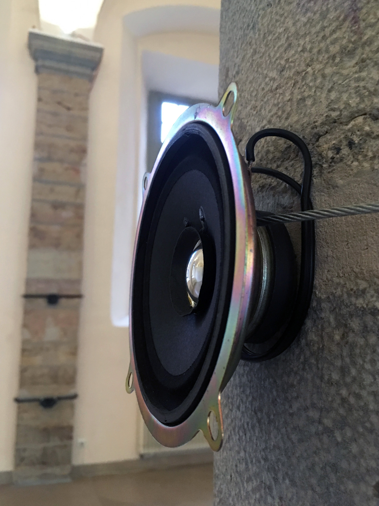
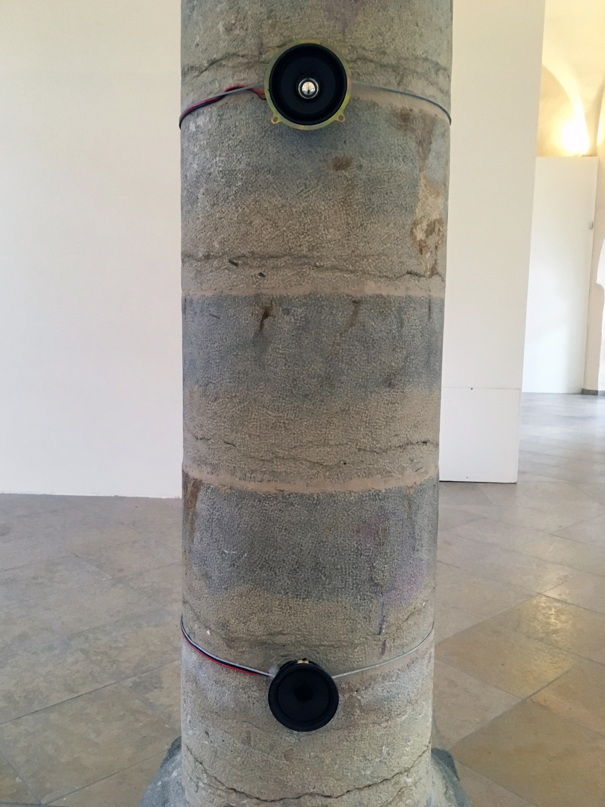
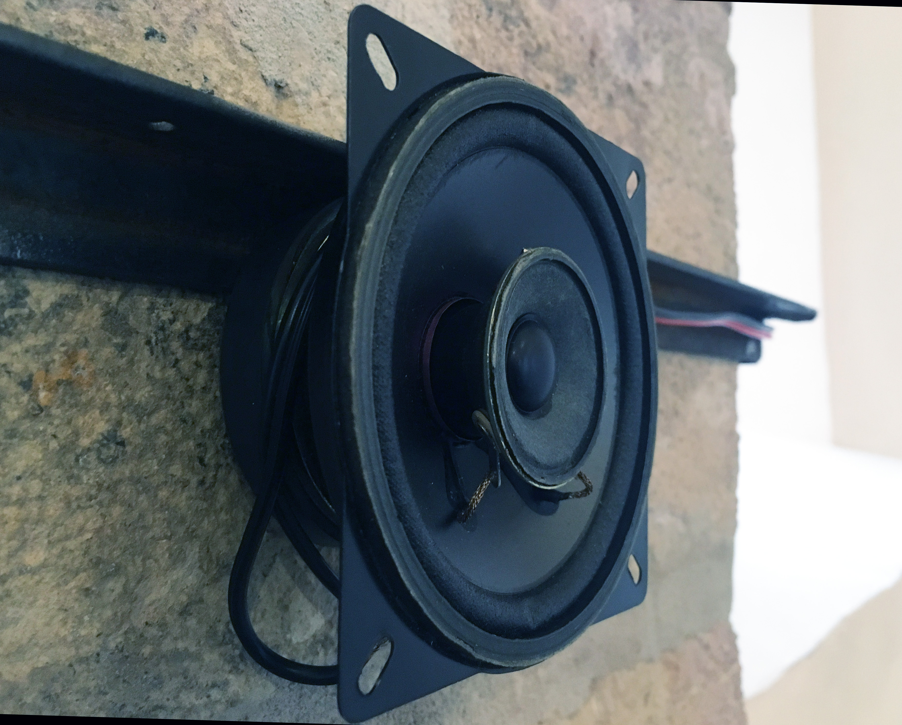
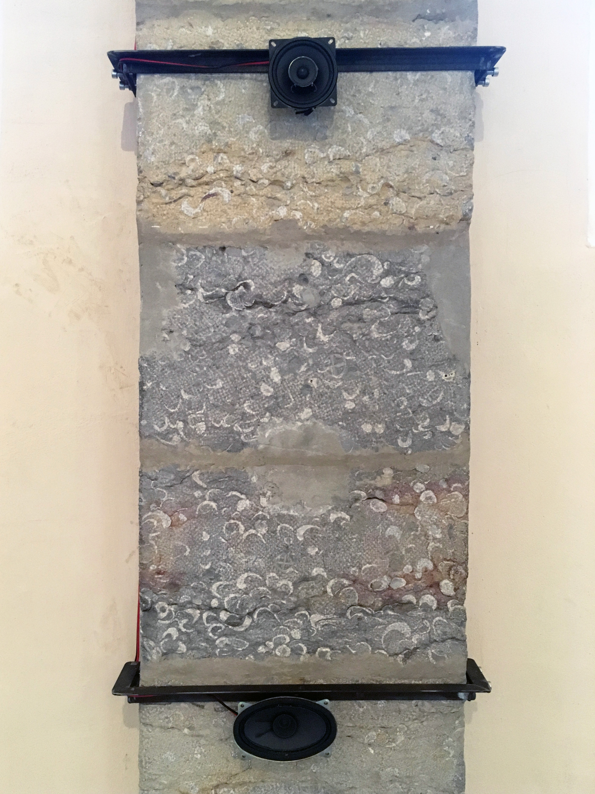
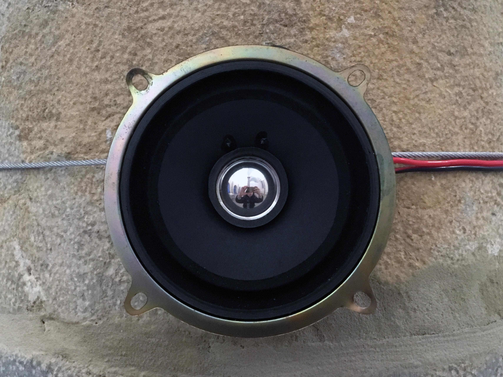
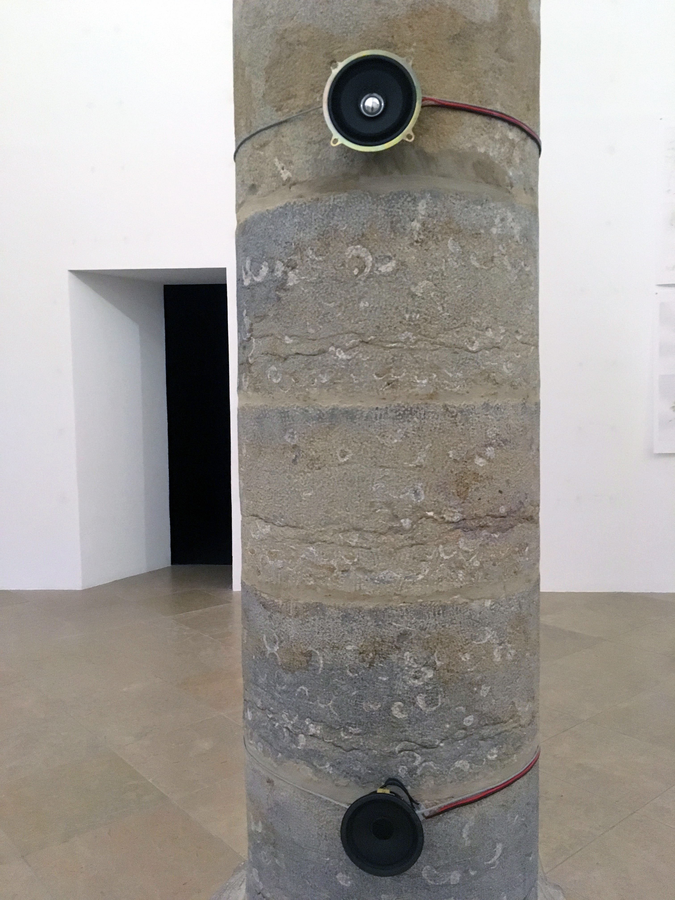
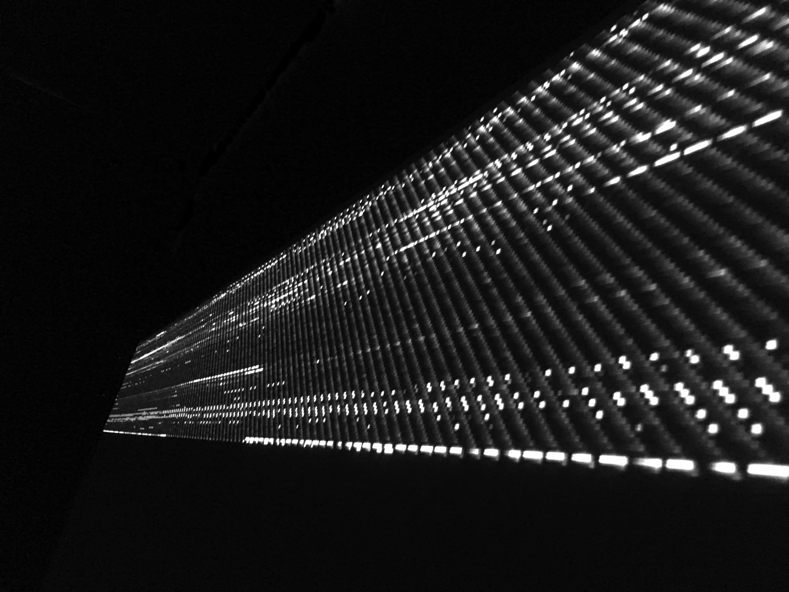
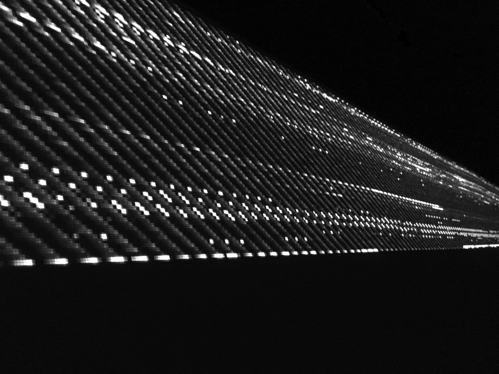
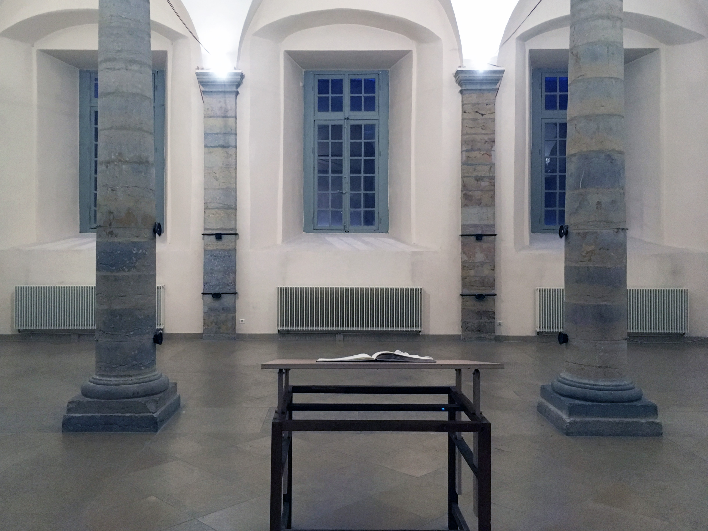
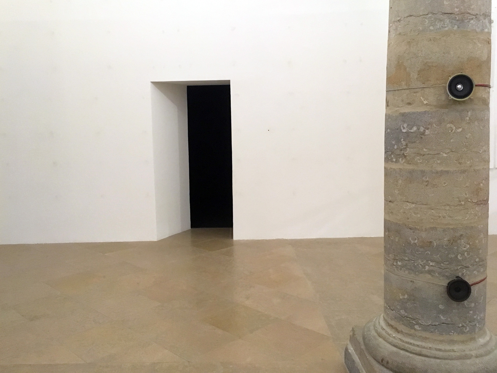

Rien n’aura eu lieu, que le lieu, excepté peut-être une constellation.
[2019]
Installation audiovisuelle interactive (son multicanal spatialisé et projection HD) (2019).
Installation pensée pour le temps et le lieu spécifique de l’exposition, à partir de réflexions sur
l’hantologie et son rapport à la matérialité de l’endroit, aux résonances qui le parcourent, aux
spectres, aux temporalités qui le hantent, ces restes de voix, de sons emprisonnés dans et entre les murs.
Plier le plan, au maximum, 6 fois, compliquer ainsi l’espace et laisser au dehors deux extériorités
visibles.
Les 12 haut-parleurs sont ainsi pris dans ces plis métaphoriques qui font se rencontrer, superposer deux points opposés de l’espace.
6 d’entre eux diffusent des sons, mémoires du lieu et traces des expositions passées, qui se
déclenchent, ou non, en fonction de la présence ou de l’absence, des mouvements des personnes à
l’intérieur de l’exposition.
6 autres, disposés suivant la symétrie axiale des lignes de pliures, captent l’environnement sonore de la pièce,
jour et nuit, pendant toute la durée de l’exposition, les transformant en points qui viennent former une matrice graphique,
une cartographie de plus en plus définie, donnant à voir l’invisible, un processus de création qui se révèlera complet à la fin de l’exposition, le 18 janvier 2020 à 18h.
Images:









